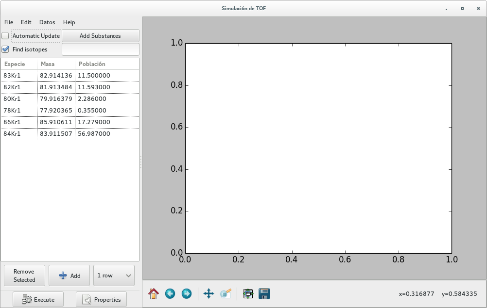
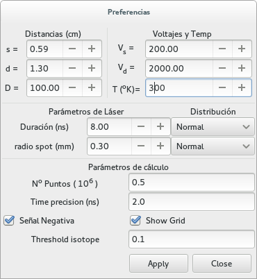

Programa interactivo¶
Para iniciar el programa se puede correr desde una línea de comandos con la línea:
$> tof_gtk
o, como:
$> tof_gtk.py
El programa interactivo tof_gtk trata de ser de uso intuitivamente obvio. Al iniciarse, uno se encuentra con una ventana similar a la siguiente:
{kind=link}
donde ya hemos definido las masas para Kriptón. El botón Execute realiza el gráfico de tiempo de vuelos para las masas dadas. Pruébelo ahora!!
Selección de masas¶
Las masas pueden seleccionarse con el mouse
Una vez seleccionadas pueden removerse con el botón Remove Selected en la parte inferior izquierda.
La manera más simple de agregar nuevas masas es:
Para agregar masas, la manera más simple es agregar la lista de sustancias o fragmentos en el casillero debajo del botón Add Substances
Las sustancias (una o más, separadas por comas) se escriben en la forma:
Kr, Al, Au (para elementos simples)
N2, O2, H2O, CO2, C7H8 (para moléculas, en este caso \(N_2, O_2, CO_2, C_7H_8\))
Luego, se debe apretar el botón Add Substances (o utilizar el shortcut ALT s)
El casillero Find isotopes (seleccionado por default) permite buscar todas las combinaciones de isótopos de una dada sustancia con un probabilidad apreciable (configurable, ver Umbral de Isótopos)
Este procedimiento da todos los isótopos de una dada sustancia y sus abundancias relativas, según la base de datos de NIST
La convención para el label es, una lista de los isótopos separada por un guión, donde cada isótopo tiene la forma: Numero de Masa + Símbolo + Número de átomos. Por ejemplo:
Para el isótopo de agua común (\(H_2O\)) tendremos: 1H2-16O1.
Para agua pesada, donde el átomo de oxígeno es reemplazado por oxígeno-18 (\(^{18}O\)) será: 1H2-18O1
También se pueden agregar masas en forma manual. Para ello hay que:
Agregar filas (botón Add)
Llenar los tres casilleros de la fila:
Especie: es un label de identificación
Masa: La masa de la sustancia en UMA. Esta cantidad determina la posición del pico y su ancho.
Población: Porcentaje de abundancia de la sustancia. Esta cantidad determina la altura del pico.
Configuración de parámetros¶
El casillero Automatic Update permite ir viendo las modificaciones a los gráficos en tiempo real cuando se modifica alguna tensión
El botón Properties (ALT p) abre una segunda ventana donde se pueden configurar parámetros del TOF y algunas de las condiciones de trabajo.
Ventana de configuración¶
La ventana de propiedades tiene la forma:
{kind=link}
En esta ventana se pueden configurar los parámetros del TOF:
Dimensiones del TOF¶
Distancia de extracción \(s\)
Distancia de aceleración \(d\)
Distancia de vuelo libre \(D\)
Tensiones aplicadas¶
Voltaje de extracción \(V_s\)
Voltaje de aceleración \(V_d\)
Temperatura de trabajo \(T\)
Láser¶
Duración del láser y forma temporal del pulso (normal o uniforme)
Radio del spot del láser y perfil del haz (normal o uniforme)
Gráficos¶
Señal negativa (simulando la señal del osciloscopio)
Agregar una grilla para guía visual
Umbral de Isótopos¶
El casillero Threshold isotope permite definir cuál es la abundancia mínima (porcentual) del isótopo de una dad sustancia a considerar.